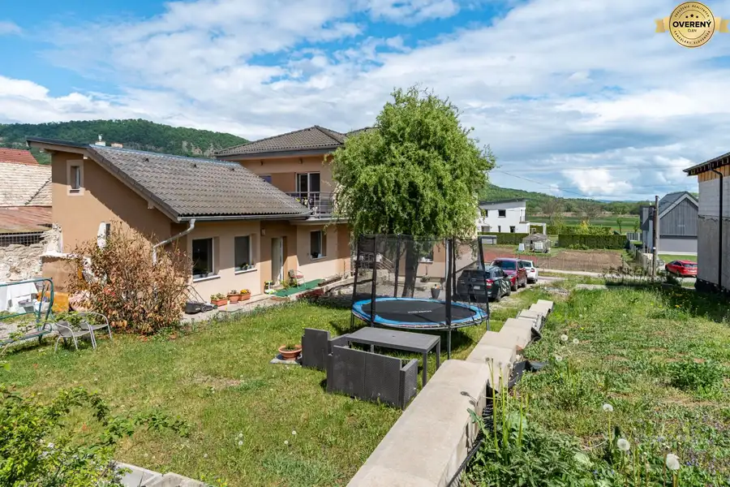
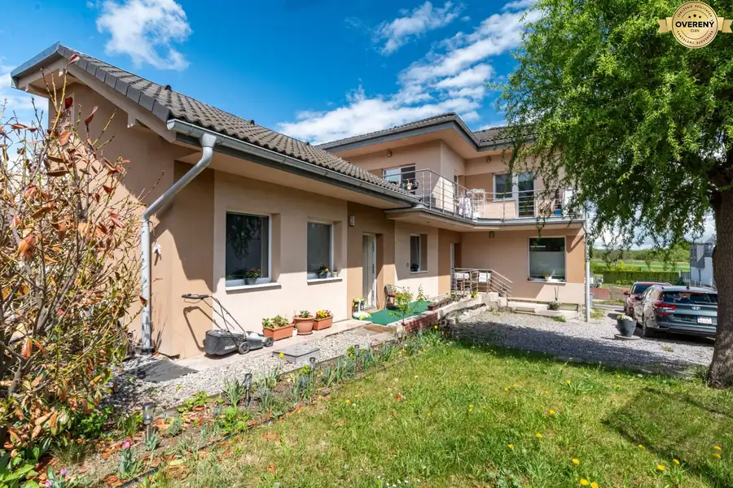
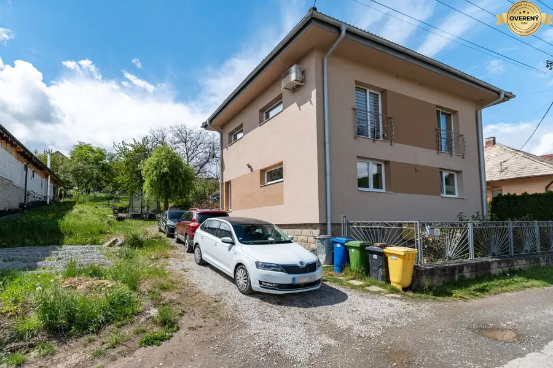
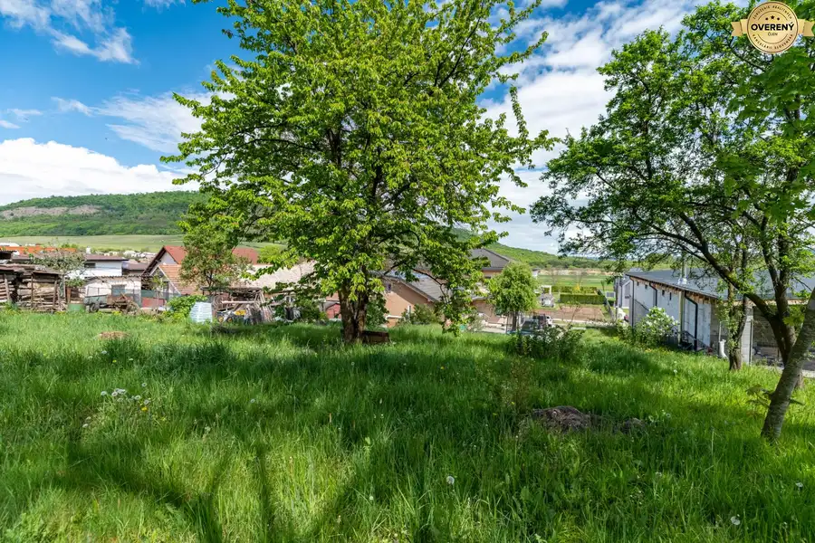
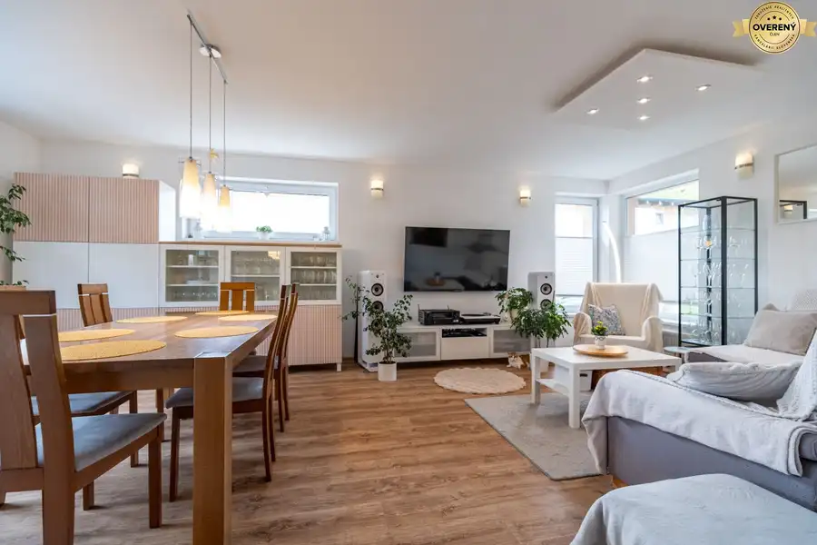
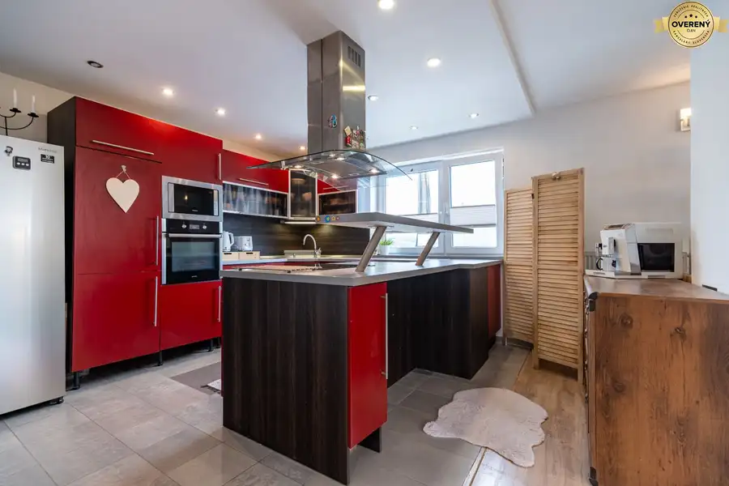
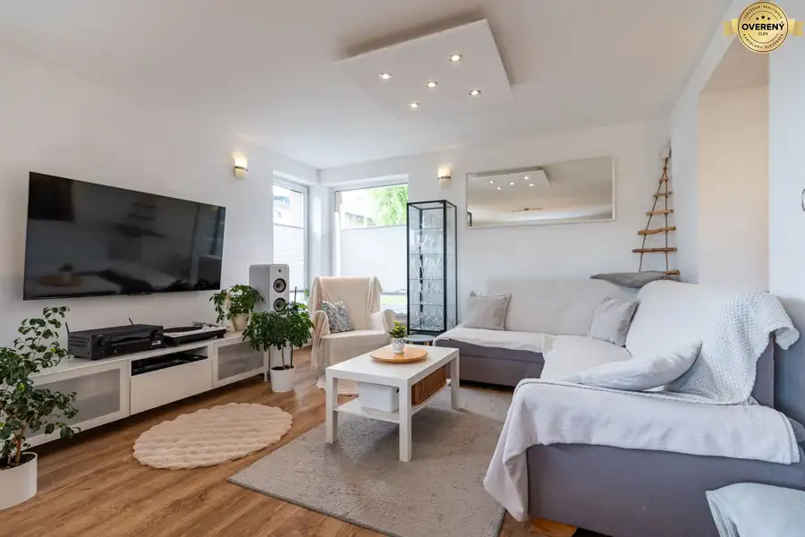
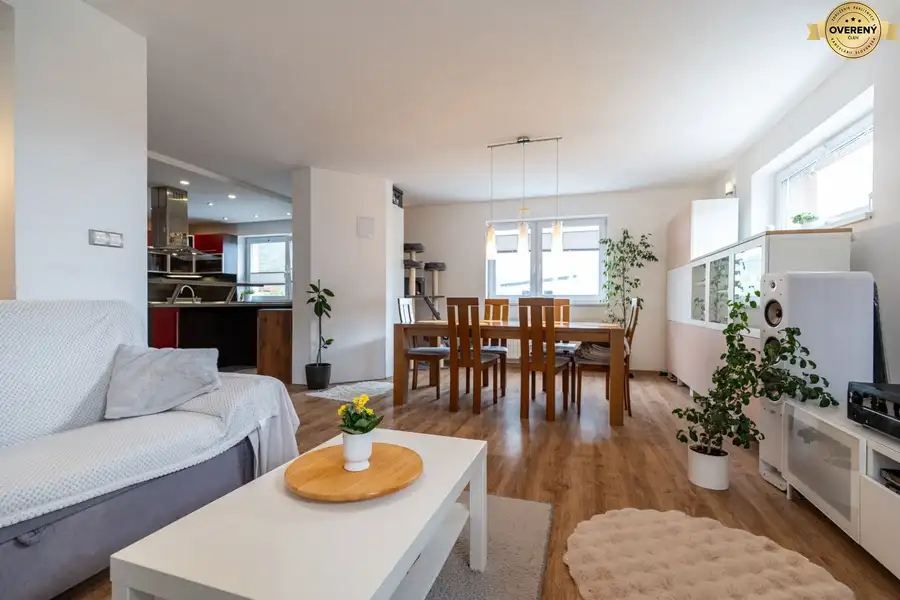

2-GENERAČNÝ DOM + STAVEBNÝ POZEMOK | 1 400 m² | FINTICE
Fintice








- Dispozícia5-izbový
- Plocha170 m²
- Poschodie0. z 2
- Stavúplne prerobený
O nehnuteľnosti
BALÍK „DOM + BUDÚCNOSŤ“ | 419 000€
Realitná kancelária STAVIAME BÝVANIE vám exkluzívne ponúka na predaj nadštandardný tehlový rodinný dom vo Finticiach, len pár minút od Prešova a zároveň doslova pár krokov od zastávky MHD.
Táto ponuka je výnimočná tým, že nejde iba o kúpu rodinného domu. Súčasťou predaja je aj samostatný stavebný pozemok s hotovým projektom na ďalší rodinný dom.
Celý ponúkaný celok má približne 1 400 m² pozemkov a ponúka kombináciu komfortného bývania, súkromia pre dve generácie a zaujímavého potenciálu do budúcnosti.
DOM PRE DVE GENERÁCIE
Rodinný dom má približne 170 m² úžitkovej plochy a disponuje dvoma úplne samostatnými bytovými jednotkami.
Je ideálnym riešením pre viacgeneračné bývanie, rodičov a deti, odrastené deti, ale aj pre tých, ktorí chcú spojiť vlastné bývanie s prenájmom alebo podnikaním priamo z domu.
V roku 2010 bol dom prakticky kompletne postavený nanovo od základov. Z pôvodného domu zostala zachovaná poctivá kamenná pivnica.
Hlavná časť domu vás zaujme otvoreným konceptom priestrannej kuchyne s komorou, plynulo prepojenej s presvetlenou obývacou izbou s krbom. Južne orientovaná hlavná spálňa je klimatizovaná.
1 400 m² POZEMKOV A MOŽNOSŤ ĎALŠIEHO DOMU
Súčasťou predaja je:
682 m² pozemok, na ktorom sa nachádza rodinný dom
718 m² samostatný stavebný pozemok s vlastným prístupom
hotový projekt na výstavbu ďalšieho rodinného domu
Druhý pozemok tak ponúka viacero možností využitia. Môže slúžiť na výstavbu domu pre ďalšiu generáciu, ako investícia, na budúci prenájom alebo ako samostatná nehnuteľnosť s vlastným využitím.
Práve spojenie existujúceho dvojgeneračného domu a ďalšieho stavebného pozemku vytvára z tejto ponuky zaujímavý priestor pre bývanie aj budúcnosť.
DISPOZÍCIA DOMU:
HLAVNÁ BYTOVÁ JEDNOTKA
Suterén (-1. PP):
chladná kamenná pivnica
Prízemie (1. NP):
vstupná chodba
kúpeľňa s WC
priestranná kuchyňa s komorou
presvetlená obývacia izba s krbom
Poschodie (2. NP):
3 izby
hlavná spálňa s vlastnou kúpeľňou
veľká rodinná kúpeľňa s WC
praktický sklad
výstup na terasu
balkón s výhľadom na prírodu
DRUHÁ SAMOSTATNÁ BYTOVÁ JEDNOTKA
Prízemie:
samostatná chodba
kúpeľňa s WC
kompletne vybavená kuchyňa
samostatná izba
MATERIÁLY, TECHNICKÉ VYBAVENIE A SIETE
poctivá tehlová konštrukcia
zateplenie minerálnou vlnou
betónová škridla
7-komorové okná s trojsklom Salamander/Hesta
plynové vykurovanie – radiátory
vysokorýchlostný optický internet rozvedený priamo v stenách do jednotlivých izieb
verejný vodovod
elektrina
plyn
optická sieť
septik
Veľkou výhodou je kompletná príprava na okamžité pripojenie do existujúcej verejnej kanalizácie.
LOKALITA – FINTICE PRI PREŠOVE
Fintice ponúkajú pokojné a bezpečné bývanie v bezprostrednej blízkosti Prešova.
Obec disponuje základnou občianskou vybavenosťou vrátane školy, škôlky, obchodov a pošty. Výbornú dostupnosť do Prešova dopĺňa zastávka pravidelnej MHD, ktorá sa nachádza len pár krokov od domu.
CENA CELÉHO BALÍKA: 419 000€
V cene získavate:
2-generačný rodinný dom s úžitkovou plochou približne 170 m²
682 m² pozemok pri dome
718 m² samostatný stavebný pozemok
hotový projekt na ďalší rodinný dom
spolu približne 1 400 m² pozemkov
Jeden celok. Viac možností. Priestor pre dnešok aj budúcnosť.
TENTO DOM TREBA VIDIEŤ OSOBNE
Fotografie vám ukážu jednotlivé miestnosti, výmera vám ukáže veľkosť pozemku, no až osobná obhliadka vám umožní naplno precítiť jeho priestor, atmosféru a jedinečnú energiu. Radi vám osobne ukážeme celý dom, pozemkový celok aj projekt plánovaného druhého domu a predstavíme vám možnosti, ktoré táto nehnuteľnosť ponúka.
Pre viac informácií alebo dohodnutie obhliadky nás kontaktujte.
Realitná maklérka: Timea Horňáková
Realitná kancelária STAVIAME BÝVANIE
Web: www.staviamebyvanie.sk
Parametre
- Rozloha pozemku
- 1400 m²
- Zastavaná plocha
- 155 m²
- Celková rozloha
- 1400 m²
- Úžitková plocha
- 170 m²
- Poschodie
- prízemie
- Počet poschodí
- 2
- Počet izieb
- 5
- Stav
- úplne prerobený
- Status
- aktívne
- Voda
- verejný vodovod
- El. napätie
- 230/400V
- Plyn
- áno
- Kanalizácia
- septik
- Internet
- optika
- Postavené z
- tehla
- Energetický certifikát
- nie
- Terén
- mierny svah
- Dátum zverejnenia
- 2026-09-14
Kde to je
Mohlo by Vás zaujímať
 BytNové
163 000 €REZERVOVANÝ 2 izbový byt, 17.novembra, Prešov
Prešov
2-izbový50 m²2. podlažie
BytNové
163 000 €REZERVOVANÝ 2 izbový byt, 17.novembra, Prešov
Prešov
2-izbový50 m²2. podlažie
 Nebytové priestoryNové
2 350 €Ponúkame na PRENÁJOM hala a kancelárie, 336m2, Ličartovce
Ličartovce
336 m²
Nebytové priestoryNové
2 350 €Ponúkame na PRENÁJOM hala a kancelárie, 336m2, Ličartovce
Ličartovce
336 m²
 Nebytové priestoryNové
1 140 €Ponúkame na PRENÁJOM hala oblúková 255m2, Ličartovce
Ličartovce
255 m²
Nebytové priestoryNové
1 140 €Ponúkame na PRENÁJOM hala oblúková 255m2, Ličartovce
Ličartovce
255 m²